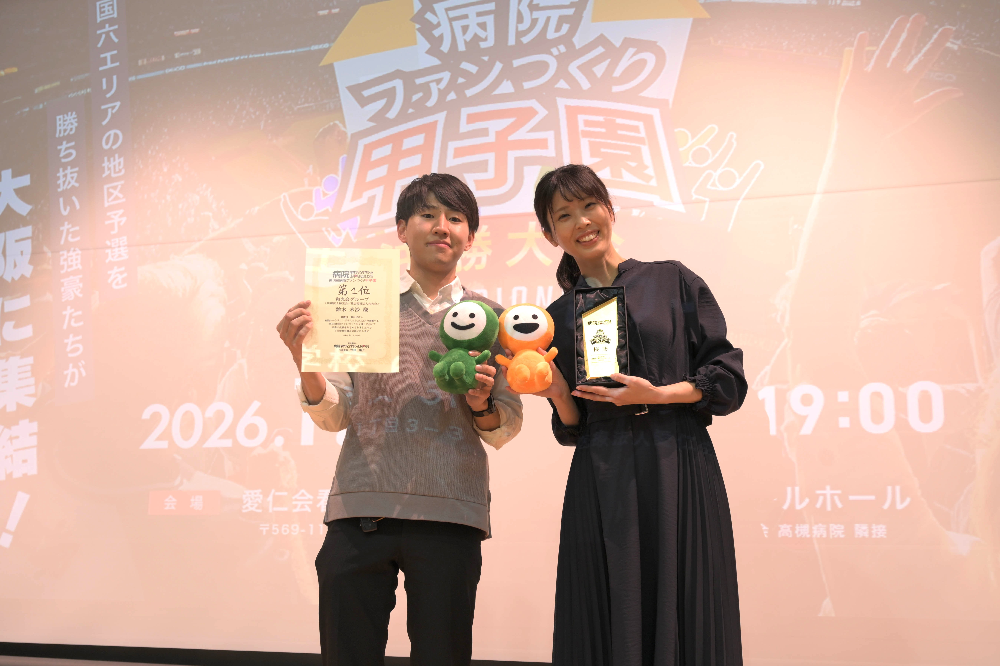
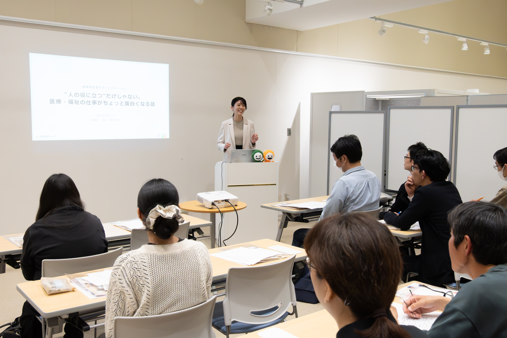
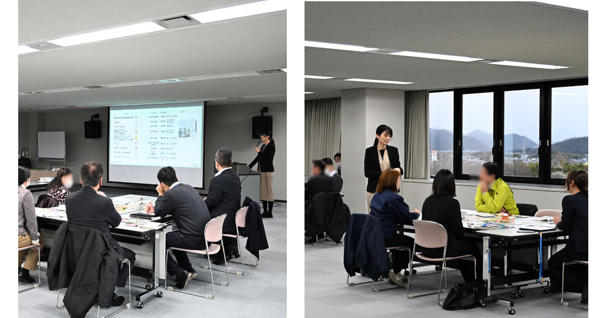
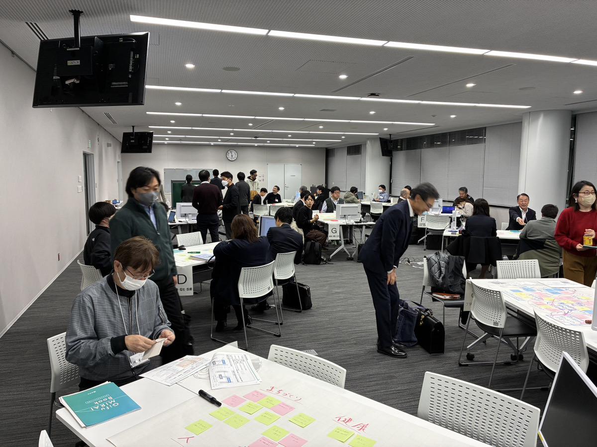
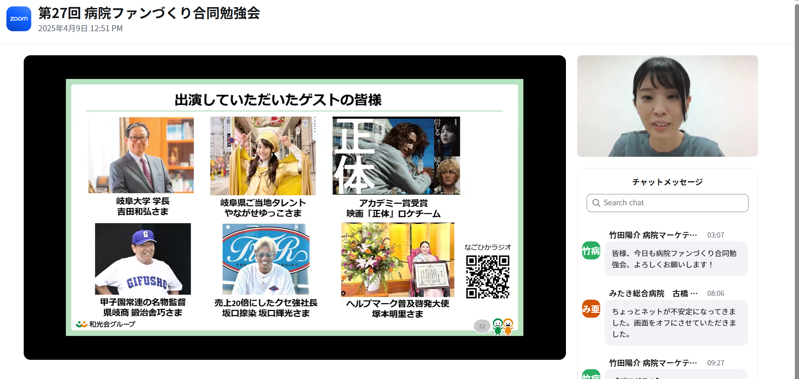
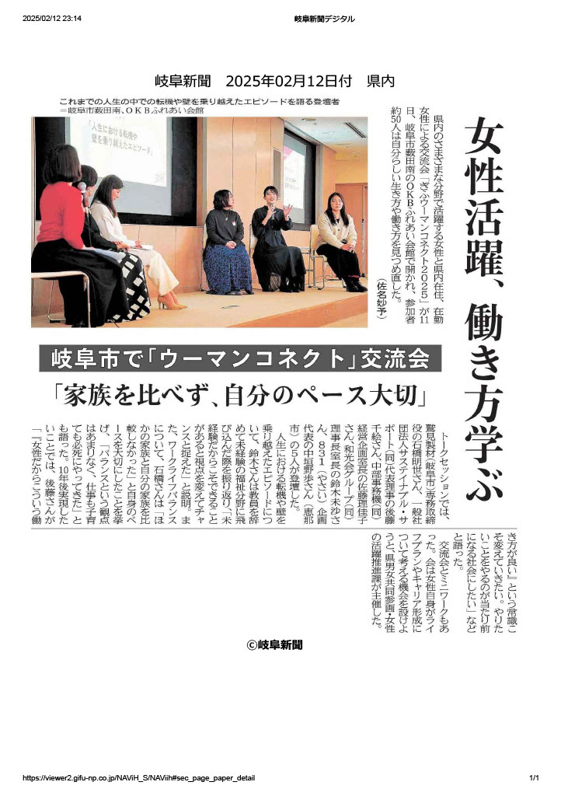
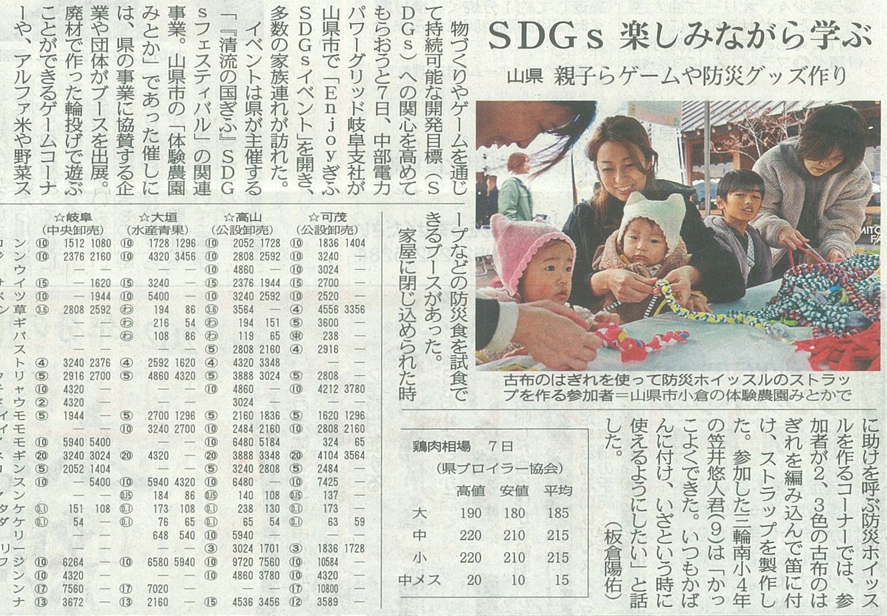

Achievements
主な実績
医療・福祉・SDGs・地域共創の各分野で実績を積み重ねています。
2026

🏆 優勝（第1位）
病院ファンづくり甲子園
病院ファンづくり甲子園
全国大会 優勝
全国6エリアの地区予選を勝ち抜いたチームが大阪に集結する全国大会で第1位を獲得。「SDGsがもたらした地域・学校・企業との新たな出会い」をテーマに、病院広報と地域共創の取り組みを発表し最高評価を受けた。
予選動画を見る →
🎤 登壇 2026.4.24
"人の役に立つ"だけじゃない。
"人の役に立つ"だけじゃない。
医療・福祉の仕事がちょっと面白くなる話
岐阜県若者サポートステーション（ぎふサポ）主催イベントに登壇。医療・福祉の仕事の魅力や、やりがいをリアルな視点で若者に向けて発信。
ぎふサポ掲載ページを見る →
🎤 講演 2026.1.29
第4回 かかみがはらSDGsパートナー交流会
第4回 かかみがはらSDGsパートナー交流会
和光会グループSDGs取り組み講演
各務原市主催「第4回 かかみがはらSDGsパートナー交流会」にて、SDGsパートナー企業・団体の皆さまを対象に和光会グループのSDGsの取り組みについて講演。

🤝 ワークショップ 2026.1.29
未来共創ワークショップ
未来共創ワークショップ
かかみがはらSDGs交流会
地域企業・行政・学校が一堂に会する参加型ワークショップを主催。岐阜県各地でSDGsパートナー交流の場を創出。
2025




🌸 登壇・主催
ウーマンコネクト2025
ウーマンコネクト2025
岐阜新聞掲載
女性の交流・キャリア形成を支援するイベントを主催。「家族を比べず、自分のペース大切」と岐阜新聞に掲載された。
2024


🥉 全国3位
病院ゆるキャラ総選挙2024
病院ゆるキャラ総選挙2024
なごみちゃん・ひかるちゃん 全国3位
病院公式キャラクター「なごみちゃん・ひかるちゃん」が全国大会で3位入賞。岐阜新聞・中日新聞・m3.comに掲載。

📰 メディア多数掲載
岐阜新聞・中日新聞・Yahoo!ニュース
岐阜新聞・中日新聞・Yahoo!ニュース
ZDNET・FM GIFUほか多数
山県市SDGsイベント・ハーモニーライト・FM GIFU出演など、地域での活動が多数のメディアに取り上げられた。
gooニュース →